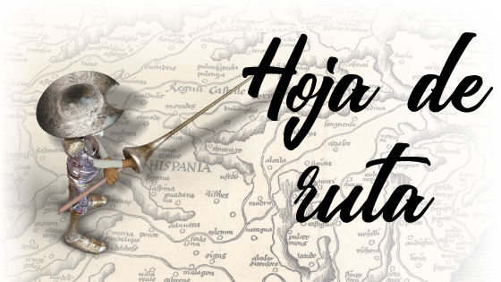
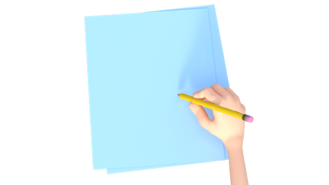
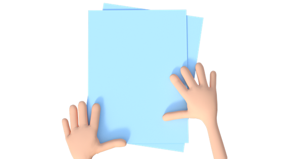
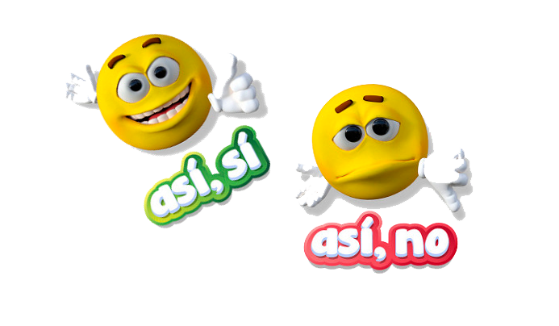

Nuestra labor como brigadistas será la de salvar lo que hemos llamado "especies en peligro de extinción": acentos, signos de puntuación, mayúsculas... Todo eso que brilla por su ausencia en un wasap y, de un tiempo a esta parte, hasta en tus escritos académicos para el instituto. Nos encargaremos de recuperar las normas ortográficas del castellano y de difundirlas de nuevo entre los más de 500 millones de hispanohablantes que poblamos el planeta.
Tras algunas actividades iniciales, formaremos brigadas de cuatro o cinco miembros para hacer frente a los distintos DESAFÍOS que nos esperan:
- 1. Ponemos el acento
- 2. Un problema mayúsculo
- 3. Un mar de dudas
- 4. Difícil elección
Cada grupo puede decidir resolver los retos en el orden que prefiera. Eso sí: cada reto solo puede llevarnos una sesión de clase y el resto de la tarea se terminará en casa. Por cada una de las misiones resueltas iremos obteniendo una cantidad de puntos. Por otra parte, el profe podrá recompensar nuestro buen hacer con puntos extra o virgulillas, que conseguiremos por nuestra buena disposición ante el trabajo: ayudar a los compañeros, ser rápidos en la realización de las tareas, etc. ¿Sabíais que la virgulilla es ese simpático signo que lleva encima nuestra letra más castiza, la "ñ"?
Con estos puntos iremos rellenando individualmente nuestra Cartilla del brigadista (también disponible en versión PDF por si que preferís rellenarla manualmente). Y al final de esta aventura, alcanzaremos una categoría diferente en función de los puntos obtenidos:
- BRIGADISTA NOVEL (entre 500 y 1 000 puntos).
- BRIGADISTA EXPERTO (entre 1500 y 1 000 puntos).
- BRIGADISTA DE HONOR (2 000 o más de 2 000 puntos).
Esta será nuestra FORMA DE TRABAJO:
¿Hay que traer cuaderno?
Realizaremos algunas tareas en nuestro PORTAFOLIO PERSONAL, un cuaderno de clase al que pondremos el nombre del proyecto seguido de nuestro nombre y apellidos ("Brigada ortografica_Nombre del alumno o alumna"). En él iremos almacenando los trabajos individuales correspondientes a cada tarea.
En alguna ocasión, te pediré realizar una tarea a través de Classroom. ¡No te despistes! ¡Todo cuenta!
¿Con o sin Internet?
A lo largo de la secuencia encontraremos documentos de apoyo, rúbricas y plantillas asociados a las distintas actividades. Cuando tengamos que trabajar con ellos, los subiré a Classroom y los compartiremos en clase para que no queden dudas.
¿Solos o acompañados?
¿Trabajaremos solos o en grupo?
Este será un proyecto para trabajar fundamentalmente en grupo, en nuestras respectivas "brigadas ortográficas", pero...
- Trabajaremos de forma individual para realizar algunas actividades concretas o para reflexionar sobre nuestro propio aprendizaje, en un apartado situado al final de cada sección, al que hemos llamado "Unos minutos para la reflexión". Estas tareas individuales van marcadas con este icono:

- Trabajaremos en equipo, de forma colaborativa, para resolver los distintos desafíos. Las tareas de trabajo colaborativo están marcadas con este otro icono:

Y ahora, ¿qué os parece si formamos nuestras brigadas ortográficas? Estarán integradas por cuatro miembros, procurando que exista siempre mezcla de chicos y chicas. Para que los grupos estén equilibrados, en lugar de por afinidad, será la profesora quien decida a qué brigada te sumas. Ten en cuenta que dentro de cada una habrá un capitán o capitana de equipo, que controla las reglas de ortografía un poquito mejor que el resto y así podrá dirigir a la brigada.
Creados los grupos, elegimos un nombre para nuestra brigada, un lema o frase con el que nos identifiquemos y, por último, adjudicamos un rol a cada uno de los miembros con la plantilla  "Creación de equipos de trabajo".
"Creación de equipos de trabajo".
Finalmente, creamos nuestro PORTAFOLIO DE EQUIPO, que puede ser una carpeta o archivador tradicional y que tendrá en su portada el nombre del proyecto, de nuestro grupo y de sus componentes. Recuerda que, si te toca ser secretario/a de la brigada, no debes mezclar tus actividades personales con las del equipo. Lo estrenamos con la plantilla de creación del equipo de trabajo.
¿Y la nota, qué?
La evaluación de algunas tareas la realizará el profesor mediante rúbricas, que debemos consultar antes de realizar la actividad correspondiente, porque nos darán las claves de lo que hay que hacer.

Además, al final de cada tarea, en un apartado titulado "Unos minutos para la reflexión", analizaremos nuestro propio proceso de aprendizaje, valorando progresos y dificultades, a través de cuestionarios. Junto al cuestionario de valoración final, que completaremos al terminar, forman parte de la autoevaluación. Los archivaremos en nuestro Portafolio personal.
Coincidencia de caracteres, opiniones o gustos que existe entre dos o más personas.
Una palabra o frase breve que identifica a una persona o a un grupo, y que se puede corresponder con la aspiración o ideal que persigue
Estos PUNTOS EXTRA cogen este nombre del signo que aparece encima de la letra emblemática del idioma español: nuestra querida "Ñ".
"Wasap" (‘mensaje enviado por la aplicación de mensajería instantánea WhatsApp’) y "wasapear" (‘intercambiar mensajes por WhatsApp’) son adaptaciones adecuadas en español.
Que habla español como lengua materna.
Genuino, puro y típico de un determinado lugar.